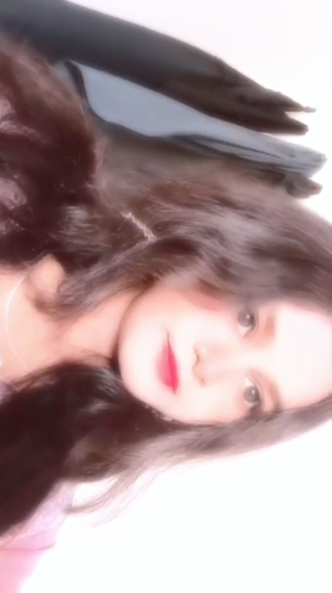
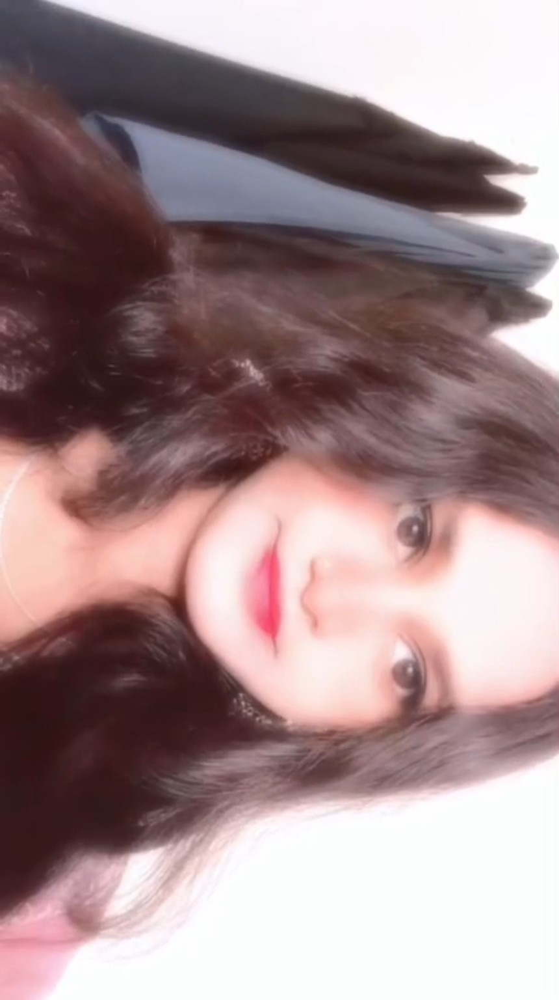
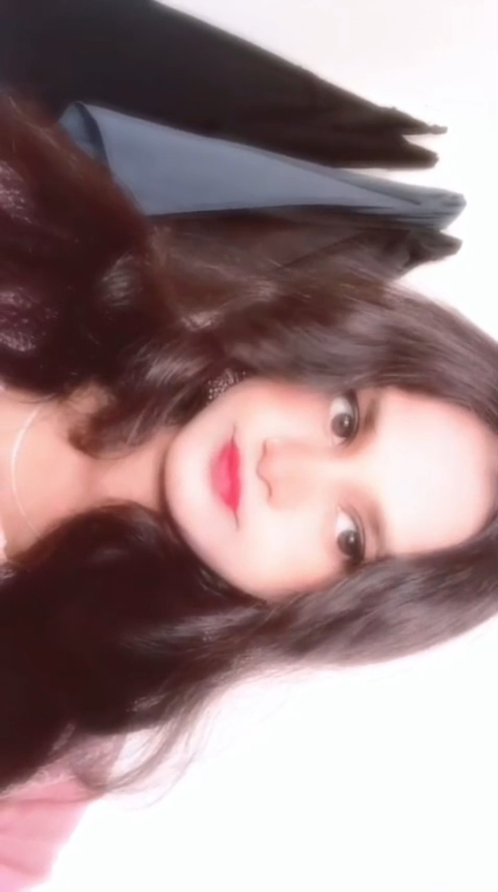
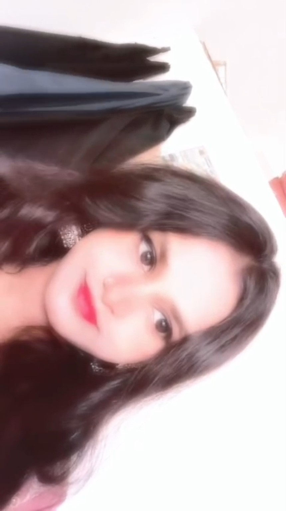
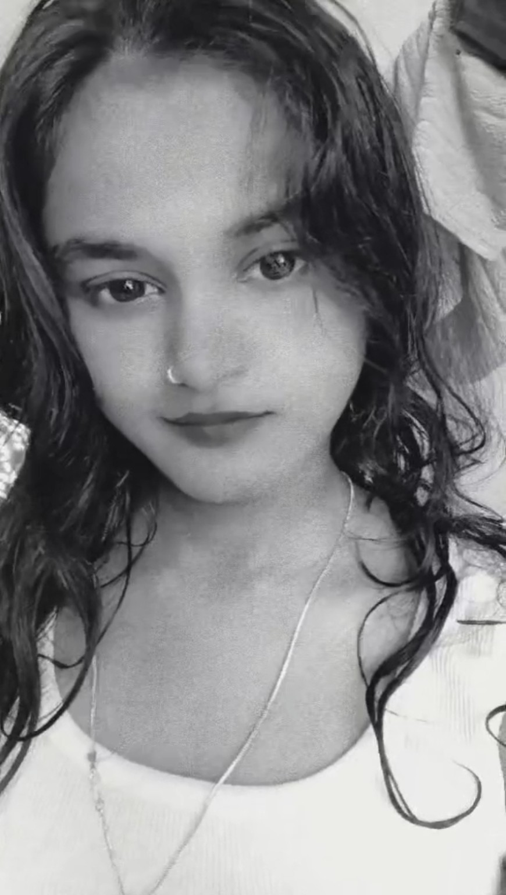

About Us — Toxic & Mussu 🫶




Mussu, pata hai tumhari calls mere liye sirf calls nahi hain.
Tumse baat karna, tumhari random si baatein sunna, tumhara kuch share karna, tumhara message aana — in sab cheezon ka mere liye ek alag hi meaning hai.
Even hamari chhoti-chhoti fights bhi kabhi-kabhi mujhe yeh realise karati hain ki I actually care about you a lot. Warna har kisi ki baat itni matter nahi karti.
Tum jo apni life ki cheezein mere saath share karti ho, chahe woh chhoti ho ya important, mujhe woh trust feel hota hai. Aur honestly, mujhe tumhari woh side bahut precious lagti hai.
Maybe main har baar words mein explain nahi kar pata ki tum mere liye kya ho. But tumhari ek call mera mood change kar sakti hai, tumhara ek message mere face par smile la sakta hai, aur tumhari silence bhi mujhe notice hoti hai.
In sab little things ne mujhe tumhare aur close feel karaya hai.
I don't just love the big moments. I love the little things that became ours. ❤️
